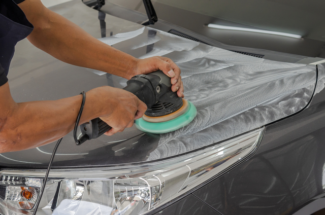
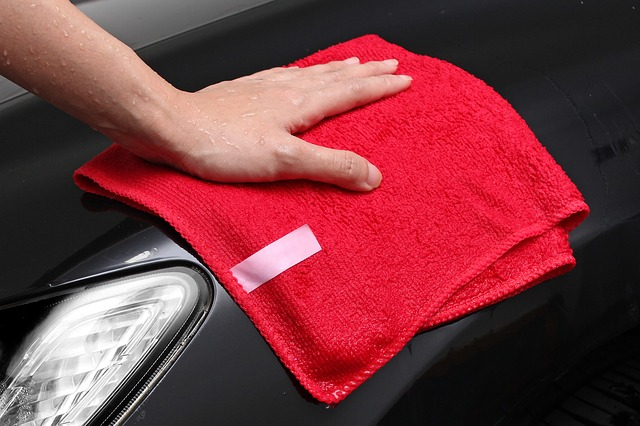

Home
About
Gallery
Blog
Contact
Blogs

How Often should you polish your car ?
Many Detailers often include polishing in there packages but really how often should you be?...
Read More
Is Ceramic Coating your car worth it ?
Ceramic is all the hype recently with more availability now than ever before, here's what you need to know before you buy...
Read More

How to properly clean your Microfiber towels
If you're a weekend warrior and want to make sure your microfiber towels do a great job for a long time, you'll want to follow this guide!...
Read More